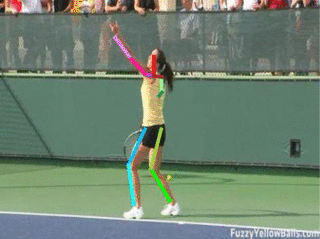
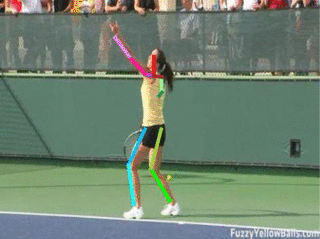

In this paper, we present an adaptation of the sequence-to-sequence model for
structured output prediction in vision tasks. In this model the output variables
for a given input are predicted sequentially using neural networks. The prediction
for each output variable depends not only on the input but also on the previously
predicted output variables. The model is applied to spatial
localization tasks and uses convolutional neural networks (CNNs) for processing input images
and a multi-scale deconvolutional architecture for making spatial predictions at each time
step. We explore the impact of weight sharing with a recurrent
connection matrix between consecutive predictions, and compare it to a formulation where
these weights are not tied. Untied weights are particularly suited for problems with a
fixed sized structure, where different classes of output are predicted in different steps.
We show that chained predictions achieve top performing results on human pose estimation from single images and videos.
paper
 

@inproceedings{chain16,
Author = {G. Gkioxari and A. Toshev and N. Jaitly},
Title = {Chained Predictions Using Convolutional Neural Networks},
Booktitle = {arXiv preprint arXiv:1605.02346},
Year = {2016}}
For any questions regarding the work or the implementation, contact the author at gkioxari@eecs.berkeley.edu